Rotational · 6-fold
Vortex
Six slender curved arms sweep around an open center, inspired by your bottom-left reference. Spin while thinking, then draw the arms inward to form a dot.
Rotational marks, blob companions, and a path toward a goal.
For an AI that helps you reach your goals and grows alongside you.

Six slender curved arms sweep around an open center, inspired by your bottom-left reference. Spin while thinking, then draw the arms inward to form a dot.

A small bloom suggests growth; five petals give the mark a gentle rotating rhythm. Pull the petals inward to close into a dot.

A soft four-lobed pulse suggests steady momentum. Rotate while thinking, then round the valleys and shrink into a dot.

A calm companion with an attentive face. Let it breathe and blink while waiting, then fade its face and round it into a dot.

A playful little companion with an M-shaped body. Rock and blink while thinking, then tuck in its feet and compress into a dot.

A rising path cups a small goal dot: progress with support. Draw the path forward while thinking, then retract it into the dot.